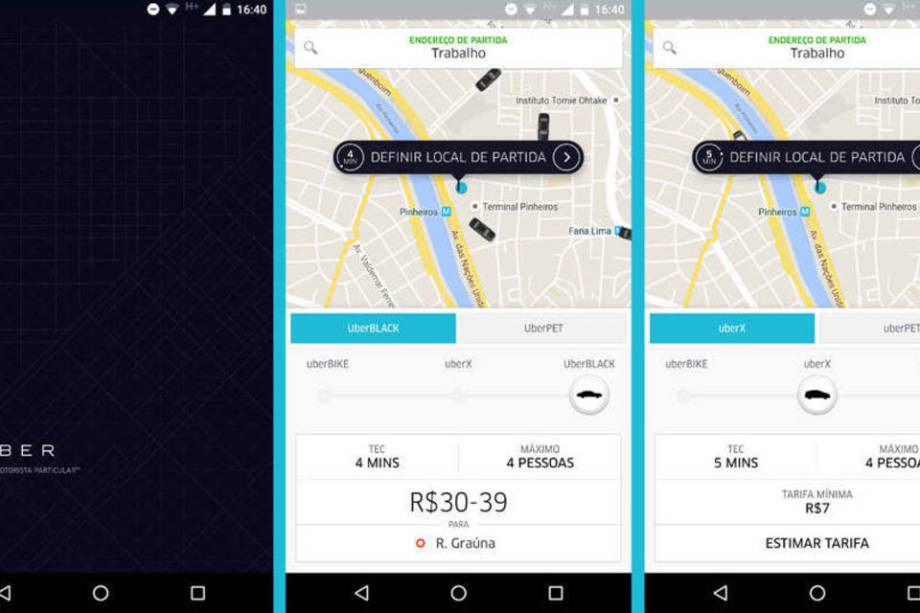
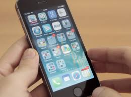

Os melhores apps em 2015
Postado em 14 de Dezembro de 2016 as 11:47
1.Uber
Grátis, em português, para Android,iPhone e Windows Phone Se em 2014 o Uber chegou ao Brasil, foi em 2015 que ele se afirmou como serviço por aqui. Neste ano, ele chegou a novas cidades e trouxe outras modalidades do serviço--como o UberX, mais barato do que táxi.É claro que a estratégia agressiva veio acompanhada de protestos de taxistas e até mesmo alguns exageros com violência.
2.Periscope
Grátis, em português, para iPhone e Android O Periscope foi um dos apps que mais deu o que falar durante 2015. Lançado como resposta ao Meekat, ele foi desenvolvido pelo Twitter para que os usuários possam fazer transmissão de vídeos ao vivo usando o smartphone.A partir dessa premissa simples, ele causou uma pequena revolução. Ele foi usado por órgãos de imprensa e até serviu para que episódio de Game of Thrones fossem pirateados ao vivo, inaugurando uma nova era da pirataria.Ao causar tanto reboliço,fica difícil não dizer que Periscope foi um dos aplicativos mais importantes de 2015.
4.Apple Music
Grátis (4,99 dólares de mensalidade)em português,para Android e iPhone (pré-instalado) Sempre se espera grandes exemplares de hardware da Apple.Neste ano,porém,os aplicativos quase roubaram a cena.A empresa anunciou o lançamento do Apple Music, seu serviço de streaming de músicas para competir com o Spotify.Uma demonstração da importância que a Apple está dando a isso é que lançou o app e o serviço para iPhones, mas também para o sistema Android.O aplicativo tem visual bacana mas não muito diferente de outros concorrentes. Um diferencial é a rádio Beats, que funciona ao vivo com DJs sediados em várias cidades ao redor do mundo.É essa a aposta da Apple para o seu novo serviço Nos três primeiros meses,o uso é grátis,depois disso é preciso pagar uma assinatura de 4,99 dólares por mês.
Postado por João Victor SouzaRedes sociais
Postado em 14 de Dezembro de 2016 as 11:47Grátis em português,para Android,iPhone/iPad e Windows Phon O Facebook dispensa apresentações.Uma grande novidade,que faz com que ele entre nesta lista,são os Instant Articles.Com ele,notícias vão parar dentro da rede social.O recurso foi lançado no Brasil no segundo semestre do ano--EXAME.com é um dos parceiros iniciais do Facebook.
Grátis,em português,para Android,iPhone e Windows Phone Este foi um grande ano para o WhatsApp O app trouxe boas novidades para os usuários.Entre elas estão o backup de conteúdo usando o Google Drive,as ligações usando rede móvel ou Wi-Fi, além da chegada da versão web do aplicativo de troca de mensagens. Por conta das boas novidades, o WhatsApp merece um lugar neste ranking.
Skype
O Skype é um aplicativo para smartphones que utilizam a plataforma iPhone. Seguindo os padrões do Skype, o aplicativo oferece a possibilidade de conversas tanto por escrito, como também através de chamadas de voz. As conversas podem ser, de graça, com outros usuário do programa ou, pagas, para celulares e telefones fixos. O aplicativo possibilita que o usuário faça outras atividades no celular enquanto faz uma chamada de voz. É possível consultar outros aplicativos do aparelho, como e-mail ou navegar na internet. Apesar dessa possibilidade, é possível realizar apenas uma chamada de voz por vez. Outro recurso interessante, é a sincronização da agenda do Skype com a agenda nativa do aparelho. Sendo possível realizar ligações para seus número cadastrados através do aplicativo.
Postado por João Victor SouzaFerramentas e ultilitarios
Postado em 14 de Dezembro de 2016 as 11:47
App Lock
Abrindo nossa lista, temos o aplicativo AppLock. Este pequeno aplicativo de segurança irá ajudá-lo a bloquear as várias partes de seu dispositivo, assim, aqueles bisbilhoteiros, ladrões ou crianças curiosas não conseguirão acessá-las. Com ele você poderá trancar conteúdos como: SMS, contatos, Facebook, galeria de fotos, Loja Google Play, configurações e chamadas. Como o nome do aplicativo sugere, você também poderá bloquear quaisquer aplicativos que desejar. Há ainda várias opções disponíveis para bloquear praticamente tudo — isso é uma excelente forma de manter o seu smartphone privado, sem precisar se confiar apenas no seu bloqueio de tela.
Clean Master
Clean Master é uma ferramenta de otimização bastante popular e também muito útil. Sempre que você instala um aplicativo Android, o mesmo cria sua própria pasta e despeja seus arquivos nela. Quando você o desinstala, esses arquivos nem sempre vão junto, ficando como lixo digital em seu aparelho. O Clean Master pode ajudar a encontrar e excluir esses arquivos desnecessários, deixados para trás por outros aplicativos. Também há embutido um gerenciador de aplicativos, gerenciador de tarefas e um bom antivírus para aqueles que apreciam a ideia de ter todos esses recursos em um só lugar.
Postado por João Victor Souza